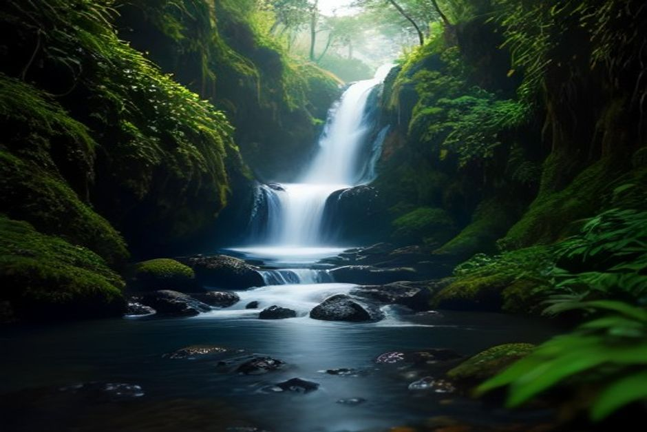
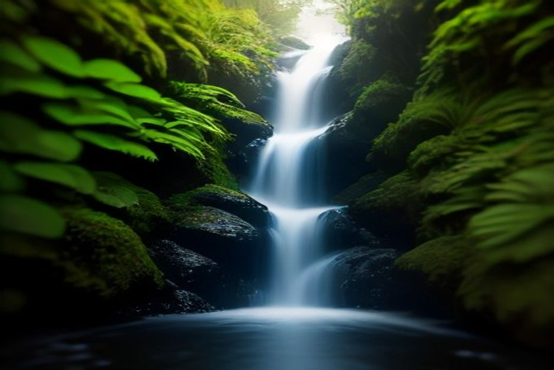

Most of Madeira's famous levada walks require a car, a long drive, and a fair bit of route planning. The Levada do Caldeirão Verde asks for less and gives back more: one trailhead, one clear path through laurel forest, and a 100-metre waterfall waiting at the end of it.
What is the Levada do Caldeirão Verde, and where does it start?
It's Madeira's best-known waterfall levada walk, officially trail PR9, starting at Queimadas Forest Park near Santana on the island's north side, 883 metres above sea level. The path follows an old irrigation channel — a levada — through dense Laurisilva forest, the UNESCO-listed laurel woodland that once covered most of the island, before ending at a green plunge pool beneath the Caldeirão Verde waterfall. Queimadas itself is worth a slow look before you set off: a cluster of thatched-roof stone cottages and a small lake, kept exactly as postcard-pretty as it sounds.

How long is the PR9 trail, and how hard is it?
The walk to Caldeirão Verde is about 6.5 kilometres one-way, roughly 13 kilometres round trip, and takes most people 4 to 5 hours there and back at a comfortable pace. The grading is easy-to-moderate — the levada path is mostly flat with only gentle elevation change — which is why it's one of the most walked trails on the island. The catch isn't the distance, it's the exposure: stretches of the path run along a narrow ledge above the ravine with only a low channel wall between you and the drop, so it suits confident walkers more than nervous ones.
What are the tunnels like on the way to the waterfall?
There are four tunnels cut straight through volcanic rock, the shortest around 20 metres and the longest close to 200 metres. None of them are lit, the rock underfoot is uneven, and after heavy rain the longest tunnel can hold several centimetres of water — a headlamp and shoes you're prepared to get wet make the crossing far more comfortable. They're also the most memorable part of the walk for a lot of hikers: cool, dripping, and lined with moss right up to the tunnel mouth.
Do you need to book the PR9 in 2026, and how much does it cost?
Yes. Since 1 January 2026, every visitor to Caldeirão Verde needs a timed entry slot booked in advance through the official SIMplifica portal, choosing a trail, date and a 30-minute entry window. The fee is around €4.50 per person, dropping to roughly €3 if you're walking with a certified local guide. Residents and children under 12 still need to register a free slot — a park ranger checks a QR code at the Queimadas entrance, so booking a day or two ahead beats turning up and hoping for space.
Is the extension to Caldeirão do Inferno worth it?
Only if you have the time and legs for it. Beyond Caldeirão Verde, trail PR9.1 continues roughly another 45 minutes to an hour to a second, more remote waterfall, Caldeirão do Inferno. It's quieter than the main falls since most day-trippers turn back at the first one, but the path narrows further and the section is occasionally closed after landslides — check its SIMplifica status separately before planning it in, and don't attempt it if you're already tired from the first 6.5 kilometres.
When is the best time to hike, and what should you bring?
Morning departures work best — Queimadas sits at altitude, and cloud tends to thicken over the mountains as the day goes on, softening the views back down the valley. The waterfall runs fullest after winter and spring rain and thins out by late summer, so expect a more dramatic cascade outside the driest months. Pack layers regardless of season (it's noticeably cooler and damper than the coast), a headlamp for the tunnels, grippy shoes, water, and your SIMplifica booking confirmation.

How does a forest waterfall walk compare to a day on the water?
They show two completely different sides of the same island. Caldeirão Verde is Madeira at its greenest and most enclosed — dripping laurel canopy, damp rock, a waterfall you only reach on foot. A private boat trip with Chifbay along the south coast is the opposite mood entirely: open Atlantic, Cabo Girão's 580-metre cliff, and swim stops in coves the PR9 crowd never sees. Neither replaces the other, and pairing a north-coast morning hike with an afternoon on the water is a genuinely satisfying way to spend one Madeira day.
Whichever direction you head, Caldeirão Verde earns its reputation as the island's classic waterfall walk: book the slot, bring a headlamp for the tunnels, and the 100-metre falls at the end are worth every damp step.
Frequently asked questions
How long is Levada do Caldeirão Verde?
About 6.5km one-way from Queimadas, roughly 13km round trip, taking 4-5 hours.
Do I need to book the PR9 trail in advance?
Yes, through SIMplifica since 1 January 2026, with a fee of around €4.50 (about €3 with a certified guide).
Is Caldeirão Verde a good hike for beginners?
Mostly flat and beginner-friendly, but unfenced ledges and four dark tunnels rule out young children and anyone unsteady on narrow paths.
Can you swim in the waterfall pool?
You can, but the plunge pool stays cold year-round — most hikers treat it as a photo stop rather than a swim.
What are the tunnels like on the trail?
Four unlit tunnels through volcanic rock, the longest around 200 metres and sometimes flooded after rain — bring a headlamp.